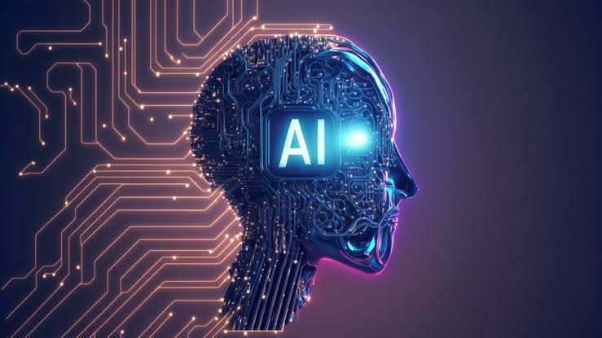

en el contexto de las ciencias de la computación, es una disciplina y un conjunto de capacidades cognoscitivas e intelectuales expresadas por sistemas informáticos o combinaciones de algoritmos cuyo propósito es la creación de máquinas que imiten la inteligencia humana. Estas tecnologías permiten que las máquinas aprendan de la experiencia, se adapten a nuevas entradas y realicen tareas humanas como el reconocimiento de voz, la toma de decisiones, la traducción de idiomas o la visión por computadora

En la actualidad, la inteligencia artificial abarca una gran variedad de subcampos. Estos van desde áreas de propósito general, aprendizaje y percepción, a otras más específicas como el reconocimiento de voz, el juego de ajedrez, la demostración de teoremas matemáticos, el cálculo y la resolución de problemas aritméticos y algebraicos, la escritura de poesía, la composición musical, la creación artística, las reglas gramaticales y lingüísticas o el diagnóstico de enfermedades. La inteligencia artificial sintetiza y automatiza tareas que en principio son intelectuales y, por lo tanto, es potencialmente relevante para cualquier ámbito de actividades intelectuales humanas. En este sentido, es un campo genuinamente universal, además, la IA se encuentra en constante evolución gracias al desarrollo de tecnologías como el aprendizaje profundo, redes neuronales y procesamiento del lenguaje natural, lo cual permite un avance acelerado en su capacidad para resolver problemas complejos
tipo de AI más conocida

ChatGPT es un chatbot de inteligencia artificial generativa desarrollado por OpenAI . Lanzado originalmente el 30 de noviembre de 2022, el producto utiliza grandes modelos de lenguaje —específicamente transformadores preentrenados generativos (GPT)— para generar texto, voz e imágenes en respuesta a las indicaciones del usuario . ChatGPT impulsó el auge de la IA , un período caracterizado por una rápida inversión y una creciente atención pública hacia este campo . OpenAI opera el servicio con un modelo freemium . Los usuarios pueden interactuar con ChatGPT mediante texto, audio e imágenes

DeepSeek (chino: 深度求索; pinyin: Shēndù Qiúsuǒ; en español: 'Búsqueda Profunda') es una empresa china de inteligencia artificial que desarrolla modelos extensos de lenguaje (LLM) de código abierto. Tiene sede en Hangzhou, Zhejiang, es propiedad y está financiada exclusivamente por el fondo de cobertura chino High-Flyer, cuyo cofundador, Liang Wenfeng, estableció la empresa en 2023 y se desempeña como su director ejecutivo

Meta AI es una empresa propiedad de Meta (antes Facebook) que desarrolla tecnologías de inteligencia artificial y realidad aumentada y artificial. Meta AI se considera un laboratorio de investigación académica, centrado en generar conocimiento para la comunidad de IA, y no debe confundirse con el equipo de Aprendizaje Automático Aplicado (AML, por sus siglas en inglés) de Meta, que se centra en las aplicaciones prácticas de sus productos

Gemini es una familia de modelos de lenguaje grandes (LLM) multimodales, desarrollado por Google DeepMind como sucesora de LaMDA y PaLM. Su primera versión fue anunciada el 6 de diciembre de 2023 con los modelos Gemini Nano, Pro y Ultra, posicionándose como competidor de GPT-4 de la empresa OpenAI. Desde entonces, Google ha lanzado versiones posteriores: Gemini 1.5 (febrero de 2024) y Gemini 2.5 (mayo de 2025), que incluyen variantes como Pro, Flash, Flash-Lite y modos especializados como Deep Think.
La inteligencia artificial generativa es un tipo de sistema de inteligencia artificial capaz de generar texto, imágenes u otros medios en respuesta a comandos de texto conocidos como «prompts». Un prompt es la instrucción, pregunta o conjunto de indicaciones para que la inteligencia artificial realice la tarea específica proporcione la respuesta requerida. La calidad del prompt influye directamente en la calidad de la respuesta
Los modelos de IA generativa aprenden los patrones y la estructura de sus datos de entrenamiento de entrada, y luego generan nuevos datos que tienen características similares
La Inteligencia artificial fuerte (IGA) es un tipo hipotético de inteligencia artificial que iguala o excede la inteligencia humana promedio. Si se hiciera realidad, una IGA podría aprender a realizar cualquier tarea intelectual que los seres humanos o los animales puedan llevar a cabo. Alternativamente, la IGA se ha definido como un sistema autónomo que supera las capacidades humanas en la mayoría de las tareas económicamente valiosas
Algunos sostienen que podría ser posible en años o décadas; otros, que podría tardar un siglo o más; y una minoría cree que quizá nunca se consiga. Existe un debate sobre la definición exacta de IGA y sobre si los grandes modelos de lenguaje (LLM) modernos, como el GPT-4, son formas tempranas pero incompletas de IGA
a inteligencia artificial amigable es una IA fuerte e hipotética que puede tener un efecto positivo más que uno negativo sobre la humanidad. «Amigable» es usado en este contexto como terminología técnica y escoge agentes que son seguros y útiles, no necesariamente aquellos que son «amigables» en el sentido coloquial. El concepto es invocado principalmente en el contexto de discusiones de agentes artificiales de automejora recursiva que rápidamente explota en inteligencia, con el argumento de que esta tecnología hipotética pudiera tener una larga, rápida y difícil tarea de controlar el impacto en la sociedad humana